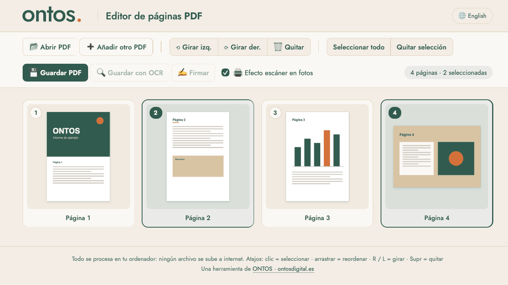

01 · Herramientas webConsultoríaAplicaciones a medida
Fusión de CamScanner e iLovePDF
Aplicaciones a medida para documentos, información y tareas repetitivas.
Editor PDF. Une, gira y reordena páginas; convierte fotos en documentos. Todo en tu navegador.